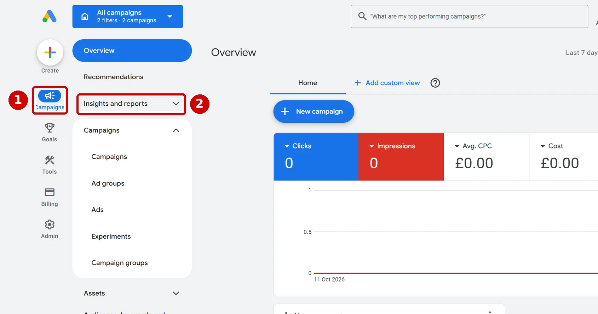
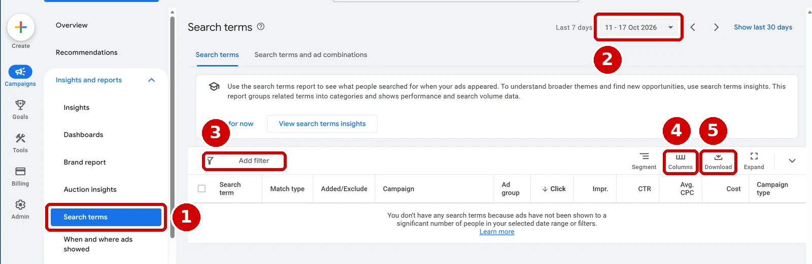

When I joined Ocean Holidays as head of performance, the first thing I did was cut out the spend that wasn't converting under any way of looking at it, whether last click or data-driven attribution. Only once that leak was stopped did I restructure and rebuild the accounts. Negative keywords were the main tool for that first job, and they are still the quickest win I know in any search account. This guide shows you exactly how to find the searches wasting your money and block them, without accidentally blocking the ones that make you money.
Who this guide is for
This is for anyone running search campaigns, from small business owners managing their own Google Ads account to junior PPC executives running client accounts. You need to be able to sign in to your account and open a campaign, and nothing more. By the end you will know how to read a search terms report, decide what to exclude, choose a safe negative match type, add negatives at the right level, and run a 20-minute weekly check.
What you'll need
- Access to your Google Ads account, with permission to edit campaigns.
- At least a few weeks of data, so there are enough searches to judge. Brand new campaigns need time first.
- Your two benchmarks: your account's average cost per conversion (CPA) and your target CPA. You will judge every search term against these.
- About 20 minutes a week once you are set up, longer the first time.
Cost: nothing beyond your normal ad spend.
What negative keywords actually do
A keyword tells the search engine which searches you want to appear for. A negative keyword does the opposite and stops your ad showing for searches you don't want. If you sell luxury holidays, a negative keyword of cheap stops you paying for clicks from people looking for budget deals.
The detail most people get wrong is that negative keywords don't match close variants. Google's own help says negatives don't match close variants or other expansions, so a negative of flower doesn't block flowers. If you want both blocked, you add both.
Step 1: Open the search terms report
The screenshots below are from Google Ads, so follow the numbers on each one.
- Sign in to Google Ads and click the Campaigns icon in the far left column, marked 1 below.
- Click Insights and reports in the menu next to it, marked 2, to open that section.

- Click Search terms, marked 1 below.
- Open the date range at the top right, marked 2, and choose at least the last 30 days, so you are judging enough data. For quieter accounts, use the last 90 days.

What you should see: a table of the actual searches people typed before clicking your ads, with the match type, campaign and ad group for each one, plus clicks, cost and other figures. If you see a message saying you don't have any search terms, your ads haven't been shown to enough people in that date range, so choose a longer one.
Step 2: Add the columns you need and sort to find the waste
- Click Columns, marked 4 above, and make sure Conversions and Cost / conv. are switched on, then click Apply.
- Click the Cost column heading to sort the most expensive search terms to the top.
- To see pure waste first, click Add filter, marked 3, choose Conversions, and set it to show terms with zero conversions.
Then work through the list using the same benchmarks I use when I look for the extremes in an account:
- Anything that has spent more than your target CPA with no conversions.
- Anything converting, but at a cost per conversion above your average or your target.
- Searches that are plainly irrelevant, whatever they have spent, such as job hunters or a competitor's product you don't sell.
Before you block anything, size it by adding up how much of the account's spend sits in each group. That tells you which fixes are worth an afternoon and which only touch a tiny corner of the account.
Step 3: Decide what really is waste
Not every expensive search is bad. Ask three questions of each one:
- Is it relevant to what I sell? If not, exclude it.
- Is there enough data to judge? Going from 1 click to 10 is a huge percentage jump, while 100 to 110 isn't. A search with two clicks and no conversion is not proof of anything yet.
- Did something outside the account cause it? A sudden spike might be news, TV or a seasonal event. In financial services, anything Martin Lewis talks about can drive a surge of searches. Spikes like that pass, and blocking them can cost you later.
Step 4: Choose the safest negative match type
This is where most accounts go wrong, so take it slowly. Google Ads offers three negative match types. Using Google's own example of the negative keyword running shoes:
- Negative exact match (
[running shoes]) blocks only that exact search with no extra words. It blocks "running shoes" and nothing else. - Negative phrase match (
"running shoes") blocks searches containing the words in that order. It blocks "blue running shoes", but not "shoes running". - Negative broad match (
running shoes) blocks any search containing all of the words, in any order. It blocks "blue running shoes" and "shoes running".
My advice is to be careful rather than aggressive. Use exact match to block a specific search you have seen and don't want. Use phrase match when a particular combination of words is always wrong for you. Keep broad match for blocking a whole theme you are certain you never want, and think hard before using a single word on its own.
Here is why that matters: a single-word broad negative such as free looks safe for a holiday company, until you realise it also blocks "free cancellation holidays", which is exactly the kind of search that books. One careless word can switch off searches that make you money, and you won't see them in your report afterwards because your ads stopped showing for them.
Google adds negatives from the search terms report as exact match by default, which is the safe choice. Check the match type before you save.
Step 5: Add the negatives
In Google Ads, from the search terms report:
- Tick the boxes next to the search terms you want to exclude.
- Click Add as negative keyword in the blue bar that appears above the table.
- Choose where it goes: the ad group, the campaign, or a negative keyword list.
- Click Save.
What you should see: the terms now appear under your negative keywords for that ad group, campaign or list, and over the next few days those searches stop appearing in your report.
Step 6: Use lists for words you'll always block
Some words should be blocked across every campaign, such as jobs or salary for most businesses. Rather than adding them one campaign at a time, put them in a negative keyword list and apply that list to every campaign. When you add from the search terms report, choose Negative keyword list in Step 5, then either pick an existing list or save a new one and apply it.
Step 7: Let AI do the first pass
AI is very good at the first sort through a long search terms report, as long as you give it the right files and a clear brief. This is how I do it.
- In the search terms report, set the date range to the last 30 to 90 days, click Download, marked 5 on the Step 1 screenshot, and choose a CSV or Excel file.
- Download your keywords too. Click the Campaigns icon, open Audiences, keywords and content, click Search keywords, and download that table the same way. This shows the AI which keywords, ad groups and campaigns you already have.
- Download your existing negative keywords from the same section, so the AI doesn't suggest negatives you already have.
- Open your AI assistant, attach the files, and paste in the prompt below with your own numbers filled in.
You are an experienced PPC manager reviewing a search terms report for wasted spend.
About the business: [what you sell, who you sell to, and anything you never offer, for example "luxury holidays to Florida, we never sell budget or last minute deals"].
My average CPA is [£ amount] and my target CPA is [£ amount].
I have attached three files:
- the search terms report for the last [30 to 90] days, with campaign, ad group, match type, clicks, cost and conversions
- my current keywords, with their campaigns and ad groups
- my current negative keywords and negative keyword lists
Please do the following:
- Group every search term into one of four groups: Irrelevant (block), Over target CPA (review), Too little data (wait), Performing (keep).
- For each term you suggest blocking, recommend the match type and level (ad group, campaign or shared list), defaulting to exact match. Only suggest phrase match when a word combination is always wrong for this business, and only suggest broad match for a whole theme, explaining why.
- Check every suggested negative against my keywords and flag any that would block searches my keywords are meant to catch, or searches that have converted.
- Do not suggest negatives that are already in my negative lists.
- Show the results as a table with these columns: search term, campaign, ad group, cost, conversions, group, suggested negative, match type, level, reason.
- Finish with the total spend in each group, so I can see where the biggest savings are.
Do not invent figures, and if something is unclear from the data, say so rather than guessing.- Check every suggestion yourself before adding anything, because AI makes mistakes. I explain how I check AI's work in why I make AI check its own work.
What you should see: a table sorted into the four groups, with a reason for each suggestion and a total at the end.
My weekly 20-minute routine
- Open the search terms report for the last 7 days, sorted by cost.
- Exclude anything clearly irrelevant straight away, using exact match.
- Note anything expensive but uncertain, and check it again next week with more data.
- Once a month, check your negative lists for anything blocking searches that now convert.
- Once a month, look at the last 30 days with the extremes method from Step 2.
The hardest part is often having the faith to leave things alone. If you have just made a big change, let the account settle for a week or two before making the next one, because the market and the platform are moving all the time.
If it goes wrong
- Conversions dropped after adding negatives. You probably blocked something too broadly. Check recently added broad and phrase negatives first, and swap the riskiest for exact match.
- The same irrelevant searches keep coming back. Remember that negatives don't match close variants. Add the plural, the singular and common misspellings separately.
- A keyword stopped getting traffic. A negative may be clashing with one of your own keywords. Search your negative keywords and lists for the word and remove the clash.
- Your report shows very few search terms, or none. Google only lists searches that enough people typed. If your ads haven't been shown to many people, the report says so: "You don't have any search terms because ads have not been shown to a significant number of people in your selected date range or filters". Choose a longer date range, and judge the searches you can see.
Stuck? Copy this prompt into an AI assistant
If you are unsure about a negative before you add it, or something in your account isn't behaving as this guide describes, paste this prompt into Claude, Copilot or ChatGPT and attach a screenshot with any account details covered.
I manage my own search ads in Google Ads and I am following a guide to adding negative keywords.
Please explain your answer in simple numbered steps and tell me exactly where to click.
What I am trying to do: [for example "block searches for jobs without blocking my main keywords"].
What I see or the problem: [for example "conversions dropped after I added the negative free as broad match"].
My keywords include: [list a few].
The negatives I added recently: [list them with their match types].
Ask me questions if you need more information before suggesting a fix.Sources
- Google Ads Help: About negative keywords
- Google Ads Help: Get negative keyword ideas using the search terms report